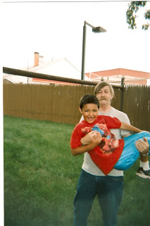

(See updates below.)
The "Petition for Abuse/Neglect" filed on behalf of Cheyenne Irish by New Hampshire's Division of Children, Youth, and Families (DCYF) alleges that the baby, who was born on October 6, was "neglected" by her mother on that very day in the hospital where the infant was born.
What this means is that Stephanie Taylor's act of "neglect" was to give birth to her child, and that the only way she could have avoided that charge was to have Cheyenne killed in utero. Because Stephanie had neglected this supposed duty, the DCYF kidnapped Cheyenne a little more than 16 hours following her birth.

Barring a near-miraculous outcome, Cheyenne's parents will never get their daughter back. So testifies New Hampshire resident Dorothy Knightly. Between August 31, 2005 and February 3, 2006, Dorothy (who prefers to be called Dot) saw three of her grandchildren abducted by the DCYF on the basis of spurious child abuse and neglect allegations.
Dot's grandson Austin (who is now ten years old), was so traumatized by the kidnapping that he attempted suicide. As a result he was institutionalized and "medicated" with dangerous psychotropic drugs. Two of Dot's grandchildren have been adopted, and the DCYF won't permit any contact with the grandparents. Ally was placed with her father.
All of this began on August 31, 2005, when Dot's daughter Candy gave birth to a daughter named Isabella. At some point in the pregnancy Candy developed a condition called placenta previa. Although this usually requires that the child be delivered via C-section, Candy was put on a morphine drip and Isabella was delivered normally. Predictably, this meant that a urine test found morphine in Isabella's bloodstream -- a circumstance easily explained as a result of the circumstances of her birth, but was maliciously depicted as evidence that Candy had "abused" her baby through pre-natal drug use.
| Isabella. |
Believing that this matter would be quickly and easily cleared up, Dot and her husband applied for temporary custody of Isabella in their home. They eagerly and cheerfully cooperated with the DCYF out of the common but tragically mistaken belief that agencies of that kind are operated by people who actually care about children, governed by laws, and burdened with scruples.
Two weeks after Isabella was born, a false child abuse report was filed with the DCYF alleging that Austin and his sister Ally had been molested by their father, who was married to Dot's other daughter, Holly.When they were notified of the accusation, Dot and Holly immediately took the children to the Southern New Hampshire Medical Center to be examined for evidence of molestation. A comprehensive screening revealed no evidence of abuse of any kind.

Nonetheless, during a preliminary hearing regarding custody of Isabella on September 26, 2005, DCYF official Kate McClure unflinchingly committed perjury by claiming that the medically debunked molestation charge had been "confirmed," adorning that lie with a critical decorative detail: The purported act has supposedly taken place in the grandparents' home.
Once that charge had been made by the DCYF, the fate of Dot's grandchildren was settled, in everything but the details.
A DCYF document entitled "Notice to Accused Parent" explains the ground rules that govern New Hampshire's "family law" court system: "All Court hearings and records of abuse and neglect cases are confidential. The hearings are not open to the public and only people involved in the case, or invited by the parties and approved by the Court, will be admitted to the Court hearings." In practice this means that DCYF banishes from such hearings anybody who can speak effectively on behalf of the accused.
A "preliminary hearing" can result in the DCYF being awarded "protective supervision or legal custody" over a child, "which would give DCYF the right to temporarily remove your child[ren] from parental care and custody and determine where and with whom your child[ren] will live," explains the document.
At no point in the process is it necessary to prove that abuse occurred. Even at an "adjudicatory hearing" -- the equivalent of a criminal trial -- the standard is a "preponderance of evidence," rather than a requirement to demonstrate guilt "beyond a reasonable doubt." But the threshold for a judicial decision to award custody of a child to the DCYF is merely the presentation of "evidence."


In substantive terms, an anonymous, unsubstantiated accusation of abuse qualifies as "evidence." In the same fashion, "temporary," as defined in New Hampshire child abuse cases, is a synonym for "indefinite." Once a judge has granted custody or protective supervision to the DCYF, the matter is placed beyond judicial remedy, and the child's fate will be determined by the child-snatcher bureaucracy.
One particularly provocative aspect of this case involves Candy's refusal to apply for DCYF-administered welfare benefits. On September 2, 2005 -- less than a month after Isabella was born -- DCYF employee Melissa Deane tried to persuade Candy to apply for Temporary Assistance for Needy Families (TANF). Candy refused to do so, pointing out that she and Isabella would be living with the grandparents and wouldn't need welfare aid -- or the invasive government supervision that would come with it.
On September 28 -- two days after the preliminary hearing upheld the neglect charge against Candy -- Ms. Deane signed the application and filed it herself. A few days later, DCYF kidnapped Isabella from the hospital, eventually arranging for her adoption to another family.
Dot Knightly points out that as long as Isabella remained with Candy, the DCYF would not be able to obtain federal welfare funding in her name. That problem was "solved" by filing an application over the objections of Isabella's mother, and then stealing her child.

The DCYF then turned its predatory attention to Dot's other daughter, Holly, and her two children, Austin and Ally.
On January 19, 2006, Holly went to the hospital following a friend's suicide attempt. While there she was arrested for "belligerent behavior" by a police officer who believed that she was intoxicated. Although she was on various prescription medications (she had been diagnosed with bipolar disorder), a test confirmed that there was no alcohol in her system at the time of her arrest. Regardless of that fact, Holly was charged with "child endangerment."
The arresting officer, Patrolman Josue I. Santia, delivered Holly's children Austin and Ally to Dot's home. Santia noted in his report that he and his partner "felt comfortable leaving the children in [the grandparents'] custody." On the following morning the grandparents were awarded temporary supervisory care over the children while the child endangerment charge was examined. That charge was eventually dropped, but DCYF wasn't willing to end its pursuit of Holly's kids.
Darren Hood Tucker, an attorney employed by DCYF, went "judge shopping" and "found another Judge willing to modify the court order" granting temporary custody to the grandparents, Dot Knightly recounted to Pro Libertate. Tucker was able to suborn a judge into ruling that it was inappropriate for Austin and Ally to have contact with Dot's daughter Candy -- whose only "offense" had been to give birth to a child who was later abducted by the DCYF.
"They sent four police officers to our home and took those children away at gunpoint," Dot recalls. "Poor Austin was literally dragged down the street kicking and screaming as the neighbors looked on." Shortly after the siblings were placed in a foster home in Merrimack, Austin -- who had no previous record of behavioral problems -- tried to hang himself.

News of the suicide attempt sent Holly rushing to the hospital, where she was intercepted by DCYF caseworker Anna Salvatore. The caseworker "threatened my daughter Holly by stating that if Holly didn't sign Austin's admission to Anna Philbrook Psychiatric Hospital ... the Judge would sign a court order terminating Holly's parental rights," Dot Knightly relates.
Just days earlier, Austin had been a bright-eyed, friendly, cheerful little boy.
Austin's disposition and physical appearance changed dramatically after he was seized by armed strangers and forced to take mind-altering drugs.
During the four months that DCYF caseworker Anna Salvatore was on maternity leave (remember that detail; I'll return to it momentarily), Dot, her husband, and Austin's mother were able to have one brief phone call with Austin and his attending physician at the Psychiatric Hospital. The doctor told Dot that "after Austin spoke to his family his whole demeanor changed ... and he was not the same violent little boy as when he was admitted." When DCYF Supervisor Tracy Gubbins learned of that phone call, she issued instructions that there would be no further contact between Austin and his grandparents or his mother.
 |
| Austin with his Grandpa. |
The only reason Dot was able to talk to her grandson was because the newly single caseworker was on maternity leave. Dot believes that Anna Salvatore -- who is now known as Anna Edlund -- may have become pregnant as a result of an affair.
"Holly and her husband had been having problems, but after this whole mess began they actually moved into a new apartment and seemed to be starting over," Dot told Pro Libertate. "The caseworker, or `home-wrecker,' Anna Salvatore found out about this and had them separated again within a week. Then Salvatore started to visit Holly's husband on nights and weekends, with or without the children, which eventually ruined her own marriage. And then she ended up divorced and pregnant -- after tearing my daughter's family apart."
The record should reflect that Ms. Edlund strenuously and categorically denies this aspect of Dot's account.
After Austin was placed in a "pre-adoptive" home, Dot -- with the help of the new caseworker -- was able to arrange a few brief, supervised visits with Austin. During one of them, the traumatized little boy quietly informed his grandmother: "They told me that Holly's not my mother anymore."
"Honey, Holly is still your mother and will always be your mother," Dot replied -- thereby triggering the DCYF's retaliation reflex.
"From that time, all further visits were canceled," she recalled to Pro Libertate.
Not even this could be considered the crowning act of cruelty inflicted on this long-suffering family by New Hampshire's child "protection" racket.

By 2008, Dot -- who still hoped that she would be permitted to care for her grandchildren -- had completed her coursework to be a state-certified foster parent, but was refused a license. She was told by DCYF official Lorraine Bartlett that she would never be permitted to care for Austin out of fear that she would take him off the toxic psychotropic drugs he was forced to take.
Through a steady series of dilatory and obstructionist maneuvers, the DCYF made it impossible for Dot to qualify as a foster parent for her grandchildren. When it was decided that Austin would be adopted by another couple, Dot and her husband were instructed by Bartlett to write a good-bye letter to their grandson in order to bring "closure" to the atrocity. This gesture reminds me a bit of the way that firing squads employed by Ethiopian despot Mengistu Haile Mariam would force families of the victims to pay for the ammunition used to murder their loved ones.
Dot insisted that she would continue her legal efforts to get Austin back.
"Nobody gets their kids back in New Hampshire," replied the DCYF official. "The government gives us the power to decide how these cases turn out. Everyone who fights us loses."
(Note: This is a slightly edited version of the original essay; some details have been changed in the interests of clarity.)
UPDATE --
According to a source on the ground in New Hampshire who is very close to the principals in the story, Cheyenne Irish was not sexually abused. She was rushed to be examined by a specialist dealing with victims of child sexual abuse; that specialist reportedly concluded that no abuse had occurred.
UPDATE, October 14: Sometimes, They Do Get Their Kids Back...
... if the parents in question can create a nation-wide controversy over the kidnapping. Reports the New Hampshire Union- Leader:
A local TV report unequivocally states that Cheyenne has already been returned to her parents:
Interestingly, Johnathan Irish's mother was on hand in what appears to be a supporting role. This contrasts sharply with the attitude of Mr. Irish's biological father, who has conspicuously approved of the DCYF's action in abducting Cheyenne.
Point of editorial privilege....
This report relies heavily on a significant quantity of documents not available on-line. I intend to archive them and make them available as soon as possible.
Thank you for helping to keep Pro Libertate on-line!

For updates on this and other stories, tune in this Saturday evening (8:00-11:00 PM Mountain Time) for Pro Libertate Radio on the Liberty News Radio Network.
Dum spiro, pugno!
41 comments:
To think that I used to be a citizen of the "Live Free or Die State". In the short time I lived there, it was obvious that Massachusetts citizens were moving there. During that time, the State swung from "Right" to "Left" politically.
Although, that probably has nothing to do with bureaucratic growth, it certainly was a sign for me that things were going the way that were inconsistent with liberty.
I appreciate your the work that you do on this Blog.
I can find nothing to say that doesn't involve a string of profanities, and possibly imcriminating words due to "hate speech" legislation... My blood boils...
There is a special depth of hell reserved or these "public servants", where even Lucifer himself dare not tread.
The level of rage that I feel inside of me cannot be fully expressed. My heart grieves for the poor children caught in the middle. There is a special place in hell for these for wicked DCYF swine.
Having been born and raised in NH it is not the NH that I remember. The independent spirit of libertarian conservatism has died only to be replaced with an East German style of law and order Republicanistic Statism. A great example of a NH candidate fitting this bill would be that Ayotte bitch who's poised to be their next Senator. I have never seen a place where there are more police. You have towns with populations of 300 people with a full time police officer. But as my old man always used to say " it was never this way until the Feds got involved " He was saying this in the late 80s. Federal money has totally destroyed that once great state.
So much for "Project Free State." Go home, people. You've failed, miserably.
@ Mayberry,
this pathetic miscarriage of justice doesn't require a case of profanities, or incriminating words. this requires a case of .44 magnum!
and the sad thing is, this happens more times than we think.
@ Anonymous @ 2117,
maybe after the economy goes belly up, the fed money will stop and you'll get your state back.
i doubt it if the cretins from Massachusetts are still there.
rick
"According to a source on the ground in New Hampshire who is very close to the principals in the story, Cheyenne Irish was not sexually abused."
Yeah, I read what was coming out and I have a girlfriend who works in pediatrics and she told me that vaginal bleeding in the days following birth is completely normal, resulting from the change in hormones after leaving the womb. There was also concern about the baby not gaining weight yet, but the first week after being born, babies don't gain weight. They can even lose a very small amount of their body weight the first week.
"This gesture reminds me a bit of the way that firing squads employed by Ethiopian despot Mengistu Haile Miriam would force families of the victims to pay for the ammunition used to murder their loved ones."
Yeah, and guess who pays taxes that end up funding the NH DCYF and other CPS's around the country?
If these things happened to my family, I would commend my soul to Almighty God - and declare war on these bastards; the no quarter variety of war. I would unleash every bit of viciousness and barbarity upon these EVIL slugs, and nothing short calling out the Marines could deter me!
If these things happened to my family, I would commend my soul to Almighty God - and declare war on these bastards; the no quarter variety of war. I would unleash every bit of viciousness and barbarity upon these EVIL slugs, and nothing short calling out the Marines could deter me!
It would be comforting too to imagine that you could count on the support of family, friends, and neighbors to assist you in your battle. I don't know if we've reached that point yet, but I would like to think that it's nearer at hand now than ever before.
I know this idea is far stretched. But how does scenario look? A wealthy family, unable to have children of their own set up an adoption of a new baby through lies. Making a few phone calls to report neglect, buy off the social worker, etc. Yes, I know, it's out there in conspiracy land but at the same time along the lines of evil thinking people.
Too many "issues" on too many occasions. They might be undergoing persecution for their affiliations but something is amiss here.
Also in THIS article(Search for the rest so you can form your own opinion) there is nothing listed about the repeated domestic abuse charges concerning the father.
If a mother continuously puts her kids in harms way by staying with the father then yes she is liable as well.
Do not spin to support a cause when a child's health and safety is at risk.
Just because the grandmother and an unnamed source says the family has been "harassed" without merit for five straight years doesn't mean it is true.
Something stinks here. No child protective agency follows a family for five years without a reason. Abuse is often generational so I do not trust a word that comes out of the grandmothers mouth.
Also the "source on the ground" needs to explain why these allegations came about in the first place for Cheyenne.
"Various prescription medications" for bipolar? Look up the words anti-psychotics, anti-depressants,and anti-convulsants.
All three classes of bipolar meds are POWERFUL drugs.
No one is saying because she was bipolar she was a bad mother.
No one is saying that because abuse allegations happened at the grandparents that they specifically harmed the child.
No one is saying that because Holly and her husband continuously "had problems" that there may have been reason to suspect stressful situations that caused neighbors to call for child protective services.
But all combined? I don't think so.
This situation probably has little to do with persecution over group allegiance. This probably has everything to do with a dysfunctional abusive family getting caught.
The family is manipulating their social and political ties to escape judgment for their real actions.
This is why more and more people will most likely be having their babies at home with unlicensed midwives, and without the preferred prenatal doctors supervision... If I were still having children, I would NOT place my unborn child in the hands of the medical profession, as horrid as that may sound. It would be far better to let nature take it's course and keep the child hidden.
If a mother continuously puts her kids in harms way by staying with the father then yes she is liable as well.
Assuming this applies to Cheyenne Irish, does the mother's "liability" here justify treating the act of giving birth as culpable "child neglect"?
Just because the grandmother and an unnamed source says the family has been "harassed" without merit for five straight years doesn't mean it is true.
Oh, but an anonymous child abuse "report" is self-validating, and that "charges" of domestic abuse are as good as convictions, correct?
How much more will we take? When will we start to help each other? I think its about time for a declaration of war on this fascist government and its minions.
Why all this talk about getting your children back legally? They were taken illegally weren't they? I agree with GunRights4US. I have a moral obligation to protect my children, even if it means losing my life. Here's what I would do. I would cheerfully and calmly comply with every single directive from the criminals who stole my child. In the background, I would be hiring a private investigator to track them. Once I knew where the children were being kept, I would get them back and just leave the country. If this nation is not going to stand up for the innocent, then neither do I have an obligation to follow its unlawful laws.
To Anonymous. I am the grandmother. No-one said the harrassment by DCYF has gone on for five year's. I have been fighting for my grandchildren for five year's.
My daughter and her husband were separated at the time she went to the hospital to check on her friend.They were separated when Isabella was born. A former friend called in the false report to DCYF, in retaliation against her for NOT joining her in illegal activity.
Because of this proven false report, we were not allowed custody of our newborn granddaughter.
And also, we have NEVER abused or neglected our five children and have NO criminal record. We had never had the unfortunate experience of dealing with DCYF in our lives until I would NOT lie for DCYF and go against my daughter's!
Anonymous @9:44,
Why not post under your real name?
Could it be that you are a DCYF employee? One that the grandmother would know?
The TANF connection is certainly deserving of more attention. This federal subsidy is what drives not only (alleged) child protective services but also the multi-billion dollar divorce industry. Straight out of Marx/Engles screed, the gov't is subsidizing the destruction of families. At it's root it is a feminist driven agenda.
After my divorce, and subsequent relegation to non-custodial parent status, I made it a point to find the home addresses of all of the attorneys involved and the judge. Even now five years late it wouldn't take too much of a push to cross the line where these societal predators would meet true justice with extreme prejudice.
In the meantime I simply advise men to give up on having a family and never, under any circumstances, enter into that three way contract with the state known as marriage.
In Male Fide
Sic Semper Tyranis
I noticed the comment by a state worker that stated something to the effect of If you can create a national outcry over the actions of child protection, you could get your kids back. THAT is CORRECT! Everyone should stop thinking that there is nothing that can be done about these baby stealing people. Everyone needs to go to a website called UCRCoA, United Civil Rights Councils of America. We have a nationwide classaction lawsuit against every child protection agebcy. We need people to fight for their kids. You can join the classaction as a TAX PAYER OR as a VICTIM. Go to the site, click on your state, find your county and join. We need county and state leaders. WE have ways to protect our children, by taking down every "child protection agency". First you file classaction against every county, then every state, that leaves the government who funds it all. Over 952 of the biggest counties filed awhile back, sorry dont remember the exact date. The fight is going on, you all need to join! Thanks, Catherine J. Quackenbush, Team Leader Brevard County, Florida.
I was present on courthouse grounds today as an OathKeeper. I did not go in to the courthouse nor attend the hearing. When I arrived, the father of the father was engaged in telling some about how his son was dangerous and abusive; others presented wondered why he would "throw his son under the bus". Later, I heard the ex-wife of the father of the father (the mother of Irish noted above) recounts to a reporter the details of her ex-husband's arrest and conviction on threat charges, gun charges, etc. I could not verify, but she had the files on her lap, having come out of the courthouse.
Note, too, the YouTube video posted at WhatReallyHappened.com of the court-ordered reunion of child and parents under a gag rule.
thanks for following this mr. Grigg! I'm so happy that baby cheyenne is back with her loving family. END DCYF!!
With regard to the bitching about New Hampshire, note that the parents have just won a crushing victory against the bureaucracy...how often does that happen in your state? Also notice that the fine Massachusetts residents who move here are mostly conservative refugees; they're a huge part of why this state is still the least unfree in America. Jason Sorens' ideological map of NH and Union Leader polls proven it to my satisfaction.
To Anonymous 3:16. You asked how often a child is returned in this state. The only other children in this state that I know of was a mother who lost her children due to allegation's against her live in boyfriend. A group of us got together and shared our ideas on how to fight back. The grandmother of the children joined us. She was in the legal field. She cried and told us she couldn't believe what DCYF was capable of. And how they could do whatever they want without repercussion's.
After our meeting, we never heard from her again and the children were given back to the mother. What does that tell you? We were definitely thrown under the bus.
I know of many families who I and my friend's have been working with. I have heard of no other children returned in NH. The DCYF worker was right. Children are NOT returned in NH. If it weren't for the Oath Keeper's and the media, Cheyenne wouldn't have been returned either. The father was smart going to Alex Jones. If I only knew then what I know now, my grandchildren would be home.
Just shows what the so-called "welfare" state is all about. Good ol' dims in congress(spit) and if I recall correctly, Mondale, had a big hand in this business. The folks that perpertrate this gets big bucks from the feral goobermnt. Where do the ferals get the authority to "nationalize" people's children?
Damned shame for Amerika.
Gotta say what a great job you are doing...for all of us. Thanks
When Big Brother wants YOUR children you will know that you did not speak up for these, thus emboldened, as at Waco, Big Brother grew in arrogance and violence to all that Christ stood and stands for in life. Remember people, YOU LET IT HAPPEN.
==============
Parents in racism-related child battle lose custody
CTV.ca News Staff
Thu. Feb. 11 2010 6:48 PM ET
A Manitoba court has ruled that a couple won't be able to keep their two children because of racist beliefs that were taught in their household.
Court of Queen's Bench Justice Marianne Rivoalen decided that both children will become permanent wards of Manitoba Child and Family Services. The children are currently in foster care with a relative.
Rivoalen made the ruling after the court was told that the couple taught racist beliefs to their children, and that the daughter showed up at school with Nazi slogans written on her skin.
==========
The Campbells' birthday party for the boy was a multi-racial, multi-ethnic affair, something does not compute then.
Regardless of whether he was a firebreathing National Socialist or a Communist or even a Democrat, this is EVIL!
=========
On Thursday, Aug. 5, 2010, a state appeals court determined the Campbells should not regain custody of their children, after the New Jersey Division of Youth Family Services removed the Campbell's three children, Adolph Hitler Campbell, 3, and younger sisters JoyceLynne Aryan Nation Campbell and Honszlynn Jeannie Campbell, from their home in Holland Township, N.J., on Jan. 9, 2009, for unspecified reasons.
the family drew attention when a supermarket refused to decorate a birthday cake for their son, Adolf Hitler Campbell. He and siblings JoyceLynn Aryan Nation Campbell and Honszlynn Hinler Jeannie Campbell have been in foster care.
A family court had earlier determined that there was insufficient evidence that the parents had abused or neglected the children.
I believe the state should be sued for the damages caused to the three children.
An infant, especially, taken from his or her mother is going to suffer traumas that last a lifetime unless treated. The infant's needs can only be met by one person, and the state took the infant away from that person.
Please read the mountains of evidence gathered by Dr. Arthur Janov in treating people who have suffered in this way. Ask him questions directly at http://www.arthurjanov.com/.
@ Catherine Quackenbush Thanks for that information. Here's the link to the site: http://unitedcivilrights.org/
Child "Protective" Services = Jugendamt
It's clearly time to start executing the criminals. Anyone who still believes in appeasement or believes that justice is rightfully deferred to some hypothetical afterlife had best be prepared to choose a side, keep low, or catch a bullet in the exchange. Frankly, anyone who catches a bullet in such an exchange due to a lack of conviction probably gets what they deserve. If those were my grandchildren, you can take it to the bank that there would be blood and internal organs on the ground, and not in small quantities!
-CarlDregaWasRight
"I know this idea is far stretched. But how does scenario look? A wealthy family, unable to have children of their own set up an adoption of a new baby through lies. Making a few phone calls to report neglect, buy off the social worker, etc"
It doesn't take a wealthy family for this stuff to happen. It just takes federal block grants to state kidnapping agencies depending on the number of children adopted out - a sure incentive for abuse. This gem was passed during the Reagan administration, IIRC.
I sometimes wonder when reading stories like this. Where are the fathers? Don't they have a line in the sand? What sort of malevolence does it take for them to start protecting their families (of course in this particular case, Cheyenne's father appears not to be worth much).
I read some time ago that Massachusetts, responding to this federal incentive, got pretty bad at kidnapping children based on trivial things like a dirty house, etc. Finally a couple of fathers, recognizing they would never see their kids again, simply killed the caseworkers. I'll bet that may have slowed down the agency a bit.
All people in government are self-interested lowlifes, and some of them are monsters. They will continue to prey on us until they discover some incentive (e.g. self-preservation) that deters them from doing so. Stop fooling around with "legal" action, the deck is stacked against you. Fathers, start being men, not sheep.
Both father's right's were illegally terminated. They were never notified by DCYF. The Probate Court Judge terminated the right's of two fictitious men, even though they had the father's information. The Judge was aware and did it anyway, denying paternity testing and custody! In all actuality, both children were illegally adopted.
Anonymous @7:11 pm,
You hit the nail on the head. The single thing more precious to these trough feeders than their taxpayer-extorted fat paychecks is their own miserable lives. If they have to choose between one or the other, they will choose to live, and let the rest of us live too.
Unhappygrammy,
You have my sympathy. But your mistake was trying to work within the "legal" system. The "legal" system is corrupt, vicious, and inhuman, and has nothing to do with "law." The "law" is whatever THEY say it is at the moment they say it, and is not anything written in a book of codes and statutes. The "law" changes moment to moment to suit the prosecutors, judges, and police who enforce their whims of the moment upon the rest of us, and call it "law."
All,
I wouldn't want to go to Hell for these lowlife turds, but if it was MY child or grandchild that was kidnapped, I would find out where these petty bureaucrats and caseworkers lived, and do to them and to their families things that would land me in Hell for a long, long time. The only consolation would be that I would be able to see them and their spawn there in Hell, several layers lower down, and tell them that I am very, very pleased to meet them again.
- Lemuel Gulliver.
PETITION FOR ABUSE/NEGLECT
At least the DCYF has to ask a court's permission before they can abuse and neglect a child. Isn't that due process?
"Sometimes, They Do Get Their Kids Back..."
Sometimes ... but only if you can get a national org of police, military, and vets to thrown their weight behind you and bring national media attention, including Worldnetdaily, which likes to bring heat on wayward officials. AND if you have a good lawyer who knows what he is doing, as this one obviously did.
Without all of that attention, and without very competent counsel, this likely would have gone the same as the other cases you wrote about. Great expose, by the way. Keep up the good work.
If only people got so upset over the adoption industry's lock on the civil rights of 6 million adoptees who are barred by law in all but 6 states, of getting their own birth certificates.
Adoption and child welfare represent the marriage of the worst aspects of socialism and capitalism.
Oath Keepers prep lawsuit against NH bureaucrats
http://www.youtube.com/watch?v=mwxLUUkZnU4
I love it! Thank you so much! You've made my year!
Please also check out:
http://unhappygrammy-grandparentsblog.blogspot.com/
Wow! Been gone for a while and look at this. Surprise, surprise, surprise (Gomer Pyle voice). If it weren't for the "heat" they'd have ignored you. Seems roaches don't like to have the light shone on them.
This may be a duplicate, but if anyone is interested, I replied to Ex-JBS' comments about Calvinism in Will's previous post, The Kidnapping of Cheyenne Irish.
If we're going to continue the discussion Mr. Spock refers to above, could we confine it to the earlier thread?
Speaking as your friendly Moderator, I'd appreciate it. Thanks.
Once CPYS (or whatever it is in the alphabet soup of bureaucracies) starts snooping around, if there is *any possible way,* any way *at all,* it is probably best to take the kids and flee the state.
I have read so many stories of people who play the government's game, comply and cooperate only to be double crossed and lose everything.
We are so accustomed to believing that in America there is still some honesty and accountability in government and that if you pay your taxes and obey the law you'll be treated fairly. Maybe that was true at one time, but today all there is in government is greed, greed, greed. They'll churn out laws by the *millions* to trip you up. They want your money and they want you dependent so you won't cause a fuss. And they'll stoop to any level.
Well, *cause* a fuss! Don't cooperate!
Poor little Isabel's and Austin's lives are down the drain I greatly fear. Hope I'm wrong. Hope they're rescued.
But a swift departure might have saved them.
Post a Comment